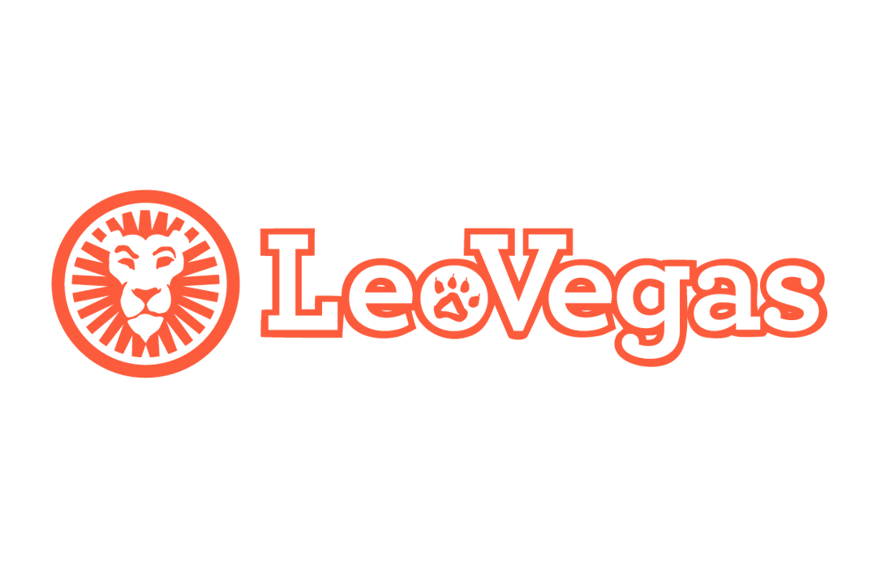

The Respinners hält den höchsten Standard-RTP im gesamten Hacksaw-Katalog: 96,40%. Der 5×3-Slot nutzt Sticky Wild Respins — bei jedem Wild-Landing gibt es Respins, bis keine neuen Wilds mehr landen. Multiplikator-Wilds bis 5× machen die Freispielsrunde besonders. Very High Volatility mit 15.000× Max Win. Die beste Langzeit-Wahl im gesamten Hacksaw-Portfolio.
- Highest RTP im Hacksaw-Katalog: 96,40%
- Sticky Wild Respins — Wilds bleiben bis zum Ende
- Multiplikator-Wilds bis 5× in Freispielen
- 15.000× maximaler Gewinn
- Niedrigste Operator-Mindest-RTP: 91,20%


18+ · Nur Neukunden · AGB gelten · BeGambleAware.org
The Respinners — Was ist dieser Slot?
The Respinners ist ein besonderer Slot im Hacksaw Gaming Portfolio — nicht wegen spektakulärer Grafik oder außergewöhnlicher Themenwahl, sondern wegen eines entscheidenden Zahlenwertes: 96,40% Standard-RTP, der höchste im gesamten Hacksaw Gaming Katalog. Erschienen im Jahr 2023 auf einem klassischen 5×3-Layout, ist The Respinners der Slot für Spieler, die nicht nur auf die Magie des Moments, sondern auch auf die Mathematik der langen Linie achten.
Die namensgebende Mechanik sind die Sticky Wild Respins: Jedes Mal, wenn ein Wild-Symbol auf den Rollen landet, bleibt es auf seiner Position (sticky) und alle anderen Rollen drehen erneut — ein Respin. Wenn weitere Wilds während des Respins landen, bleiben auch diese und lösen weitere Respins aus. Dieser Prozess setzt sich selbstverstärkend fort, bis kein neues Wild mehr erscheint. Das Ergebnis: Ketten von Respins, bei denen sich immer mehr Wilds auf dem Spielfeld akkumulieren.
In der Freispielsrunde trägt jedes Wild zusätzlich einen Multiplikator bis 5×. Mehrere Multiplikator-Wilds können kombiniert werden, was die Gewinne auf dem 5×3-Grid exponentiell skaliert. Mit einem maximalen Gewinn von 15.000× dem Einsatz und Very High Volatility bietet The Respinners die seltene Kombination aus fairem langfristigem RTP und explodierendem Short-term-Potenzial.
Wie man The Respinners spielt
- Stelle deinen Einsatz ein und starte einen Spin auf dem 5×3-Reel-Grid. The Respinners nutzt traditionelle Paylines — Gewinne entstehen durch gleiche Symbole auf Gewinnlinien von links nach rechts.
- Wild-Symbole: Das Wild-Symbol erscheint auf allen Rollen. Sobald ein Wild landet, wird das Sticky Wild Respin-System aktiviert — das Wild bleibt auf seiner Position und alle anderen Rollen drehen erneut.
- Landen während des Respins weitere Wilds, bleiben auch diese sticky. Jedes neue Wild löst einen weiteren Respin aus. Dieser Prozess wiederholt sich, bis keine neuen Wilds mehr landen.
- Mit mehreren Sticky Wilds auf dem Grid entstehen deutlich mehr Gewinnlinien-Kombinationen. Vollständige Wild-Linien (alle 5 Positionen auf einer Linie sind Wilds) zahlen das Maximum aus.
- Scatter-Symbole: 3 oder mehr Scatter lösen die Freispielsrunde aus. In den Freispielen trägt jedes Wild zusätzlich einen Multiplikator-Wert von 1× bis 5×.
- Multiplikator-Kombination: Wenn mehrere Multiplikator-Wilds gleichzeitig auf einer Gewinnlinie aktiv sind, addieren oder multiplizieren sich ihre Werte — der Haupttreiber für die größten Gewinne in The Respinners.
- Retrigger: Weitere Scatters in den Freispielen verlängern die Runde. Die Sticky Wild Mechanik bleibt in allen Freispielen aktiv, was lange Respin-Chains ermöglicht.
Bonus Features
Paytable auf einen Blick
Auszahlungen als Multiplikator des Einsatzes für 3, 4 und 5 gleiche Symbole auf einer Gewinnlinie. Wild-Multiplikatoren (Freispiele: bis 5×) werden zusätzlich angewendet.
| Symbol | 3 gleiche | 4 gleiche | 5 gleiche |
|---|---|---|---|
| Premium-Symbol (Hoch) | 0,6× | 2,5× | 12× |
| Mittelwertiges Symbol | 0,4× | 1,8× | 8× |
| Standard-Symbol | 0,3× | 1,2× | 5× |
| Niedrig-Symbol | 0,15× | 0,6× | 2,5× |
| Royals A–10 | 0,08× | 0,3× | 1,2× |
Spezial-Symbole: Wild (ersetzt alle Reguläre, Sticky bei Landing) · Scatter (triggert Freispiele) · In Freispielen: Jedes Wild = 1× bis 5× Multiplikator on top.
Freispiele — Multiplikator-Wilds im Einsatz
Die Freispielsrunde von The Respinners ist, wo sich der höchste RTP des Spiels in echtes Gewinnpotenzial verwandelt. 3 oder mehr Scatter überall auf den Rollen starten die Runde. Von Beginn an ist jedes Wild mit einem Multiplikator ausgestattet.
| Trigger | Freispiele | Wild-Multiplikator | Retrigger |
|---|---|---|---|
| 3 Scatters | 10 FS | 1× bis 3× | +5 FS |
| 4 Scatters | 15 FS | 1× bis 4× | +7 FS |
| 5 Scatters | 20 FS | 1× bis 5× | +10 FS |
RTP und Varianz
Standard-RTP: 96,40% — höchster Wert im gesamten Hacksaw Gaming Katalog, Stand 2026. Varianz: Sehr Hoch. Hit-Frequenz: 1 in 3,9 Spins — für Very-High-Volatility-Standards vergleichsweise häufig.
| RTP-Konfiguration | Wert |
|---|---|
| Standard (Basisspiel) | 96,40% |
| Operator-Mindest-Konfiguration | 91,20% |
| Vergleich: Hacksaw-Katalog-Durchschnitt | ~96,10% |
Die 96,40% bedeuten in der Praxis: Über sehr lange Spielsessions — theoretisch Millionen von Spins — behält der Spieler statistisch 96,40 Cent von jedem gesetzten Euro. Das ist besser als der Katalog-Schnitt und besser als die meisten anderen Hacksaw-Titel. Very High Volatility bedeutet dennoch, dass kurze bis mittlere Sessions extrem variabel verlaufen können — lange Phasen ohne Freispiele gefolgt von einer explosiven Respin-Chain sind das typische Muster.
Die Operator-Mindest-RTP von 91,20% ist ebenfalls bemerkenswert: Sie liegt deutlich über den 88%–89% Minimums, die andere Hacksaw-Titel erlauben. Das schränkt die schlechteste mögliche Casino-Konfiguration ein und schützt Spieler besser.
Unser Fazit
Pros
- Höchster Standard-RTP im gesamten Hacksaw-Katalog: 96,40%
- Sticky Wild Respins — selbstverstärkende Gewinnmechanik
- Multiplikator-Wilds bis 5× in Freispielen
- 15.000× Max Win mit Very High Volatility
- Operator-Mindest-RTP 91,20% — bester Spielerschutz im Katalog
Cons
- Very High Volatility — lange Wartezeiten möglich
- Visuelle Präsentation weniger spektakulär als andere Hacksaw-Titel
- Maximale Freispiel-Power nur bei 5 Scattern — selten organisch
- Kein Bonus Buy in regulierten Märkten verfügbar